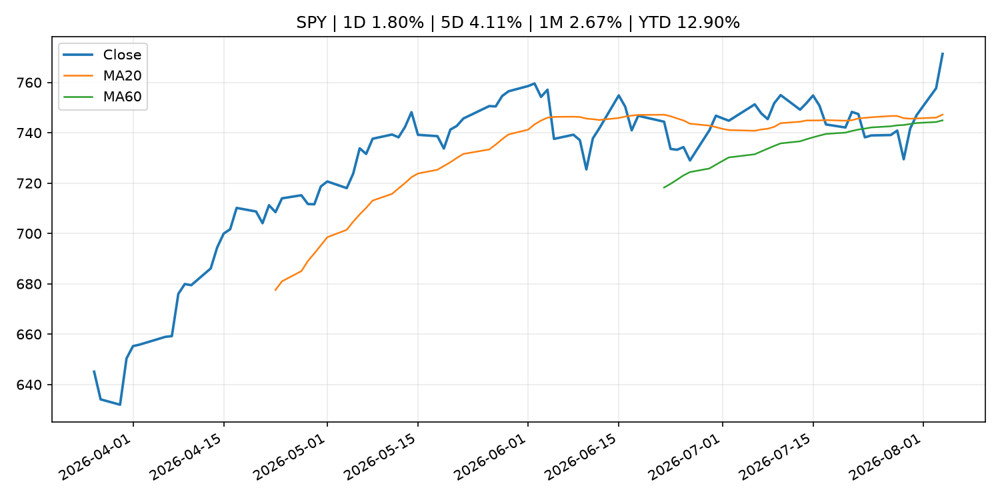
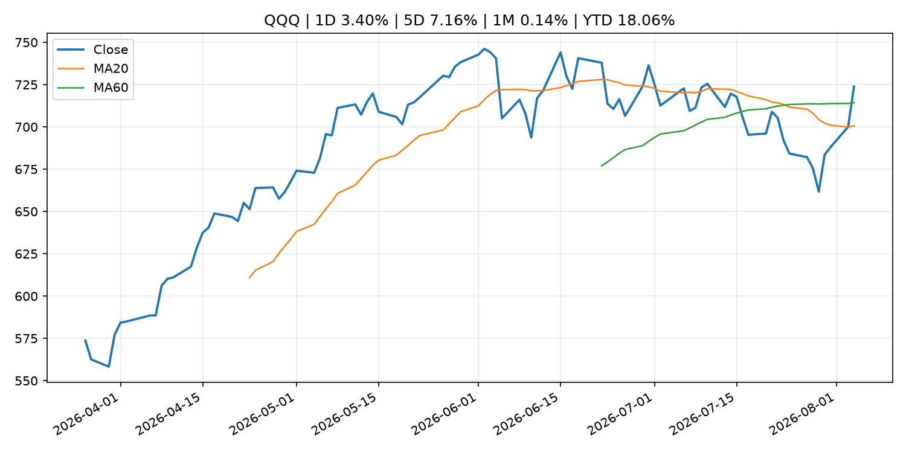
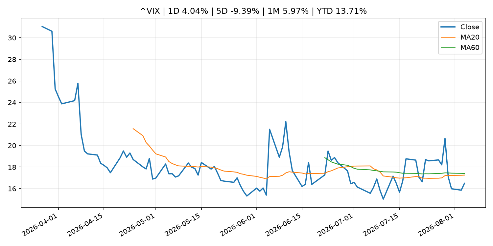
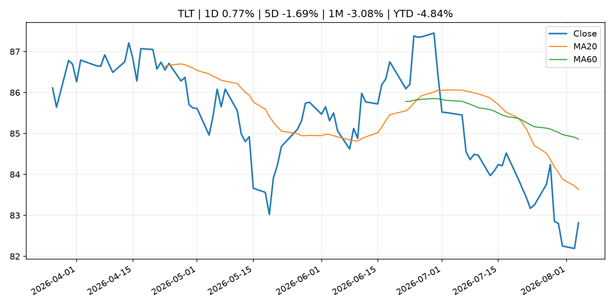
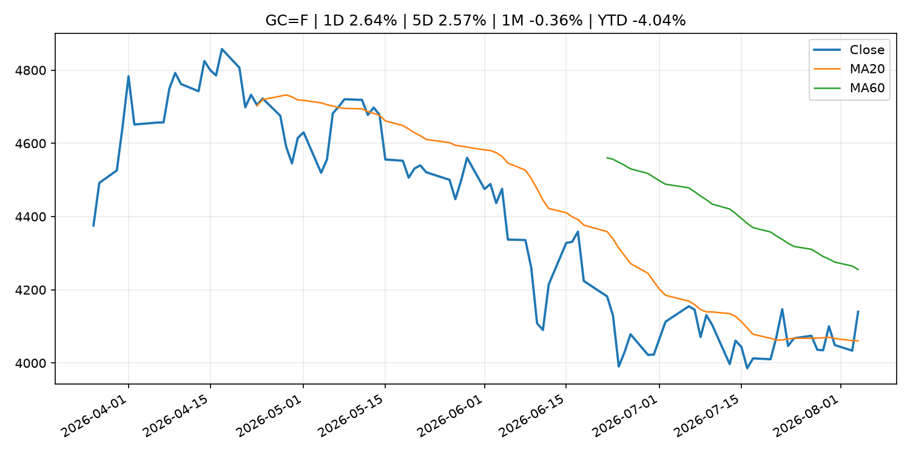
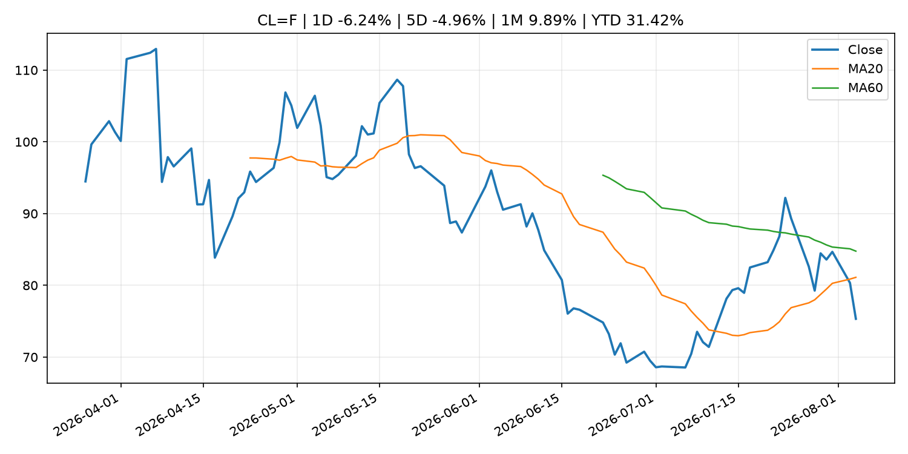
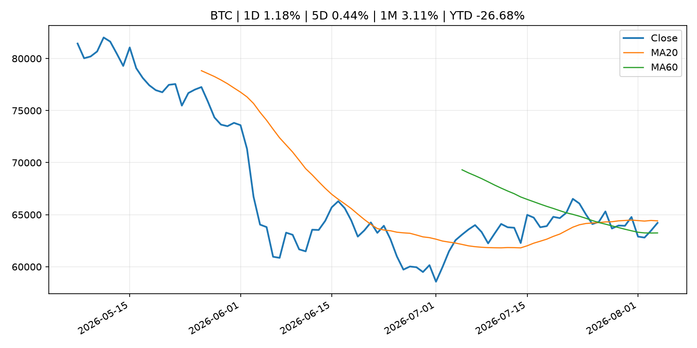
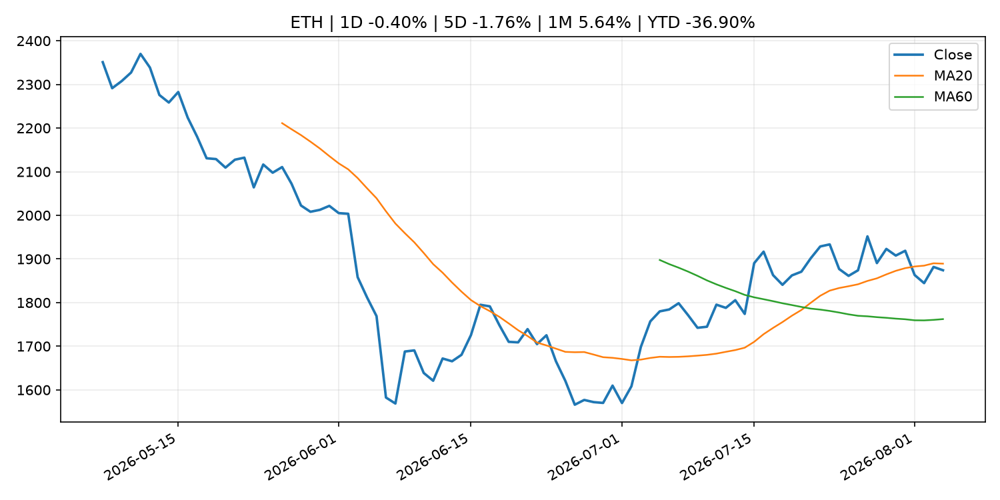
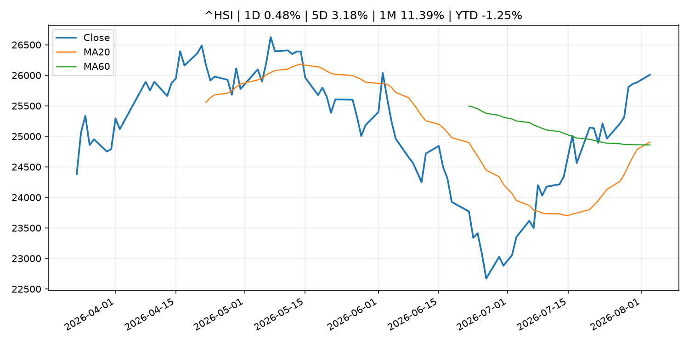

Global Macro Morning Briefing - 2026-08-05
Not financial advice / 非投资建议。
0. 今日总览
- 市场状态：mixed。股指上涨、波动率或美元回落，市场更接近风险偏好改善。 但存在信号冲突，需要降低单一叙事置信度。
- 今日三大主线：
- central_bank_speech: So what’s the plan to bring down inflation? The new Fed chair and his White House allies say you shouldn’t ask.
- crypto_market_structure: Samsung is poised to become a dominant stablecoin distributor, analysts say
- regulation: Clarity Act sits idle over Trump ethics question as Warren asks SEC to investigate him
- 一句话结论：今日晨报重点关注：央行官员表态可能影响市场对下一次会议的定价。；加密市场结构和监管变化会影响 BTC、ETH 及相关股票的风险溢价。。跨资产方面，SPY 1D 1.80%；QQQ 1D 3.40%；^VIX 1D 4.04%；TLT 1D 0.77%；GC=F 1D 2.64%；CL=F 1D -6.24%；BTC 1D 1.18%；ETH 1D -0.40%；股指上涨、波动率或美元回落，市场更接近风险偏好改善。 但存在信号冲突，需要降低单一叙事置信度。政策、通胀、利率、美元、美债、能源和加密监管仍是主要观察线索。所有结论仅基于公开数据与短摘要整理，不构成投资建议。
1. 隔夜跨资产市场
- 美股：SPY 1D 1.80%，QQQ 1D 3.40%，整体趋势需结合 VIX 和利率确认。
- 美债/美元：TLT 1D 0.77%，美元指数 1D -0.08%，是判断折现率压力的核心线索。
- 黄金/原油：黄金 1D 2.64%，原油 1D -6.24%，用于观察避险、通胀和地缘风险。
- 加密：BTC 1D 1.18%，ETH 1D -0.40%，关注是否独立于纳指走出加密自身行情。
- 港股/A股：恒生 1D 0.48%，沪深300/上证 1D n/a，重点看中国政策预期与人民币线索。
- 风险观察：确认风险偏好是否扩散到小盘股、信用利差和周期品。
US_EQUITY
| symbol | latest close | 1D | 5D | 1M | YTD | trend |
|---|---|---|---|---|---|---|
| SPY | 771.33 | 1.80% | 4.11% | 2.67% | 12.90% | uptrend |
| QQQ | 723.85 | 3.40% | 7.16% | 0.14% | 18.06% | range_bound |
| DIA | 540.43 | 1.73% | 2.57% | 1.95% | 11.74% | uptrend |
| IWM | 301.71 | 1.85% | 2.84% | 0.94% | 21.28% | uptrend |
| VTI | 380.82 | 1.87% | 4.05% | 2.46% | 13.23% | uptrend |
US_MACRO_MARKET
| symbol | latest close | 1D | 5D | 1M | YTD | trend |
|---|---|---|---|---|---|---|
| ^VIX | 16.50 | 4.04% | -9.39% | 5.97% | 13.71% | downtrend |
| DX-Y.NYB | 99.88 | -0.08% | -1.48% | -0.96% | 1.49% | range_bound |
| TLT | 82.82 | 0.77% | -1.69% | -3.08% | -4.84% | strong_downtrend |
| IEF | 93.25 | 0.46% | -0.33% | -0.99% | -2.95% | downtrend |
COMMODITIES
| symbol | latest close | 1D | 5D | 1M | YTD | trend |
|---|---|---|---|---|---|---|
| GC=F | 4,140.10 | 2.64% | 2.57% | -0.36% | -4.04% | range_bound |
| SI=F | 59.76 | 3.62% | 4.29% | -3.50% | -15.31% | range_bound |
| CL=F | 75.33 | -6.24% | -4.96% | 9.89% | 31.42% | downtrend |
| BZ=F | 78.87 | -5.85% | -6.21% | 9.56% | 29.83% | downtrend |
| NG=F | 2.69 | -3.38% | 0.94% | -17.20% | -25.73% | strong_downtrend |
| HG=F | 6.63 | 1.81% | 4.90% | 7.35% | 17.59% | strong_uptrend |
HK_MARKET
| symbol | latest close | 1D | 5D | 1M | YTD | trend |
|---|---|---|---|---|---|---|
| ^HSI | 26,009.40 | 0.48% | 3.18% | 11.39% | -1.25% | strong_uptrend |
| 0700.HK | 487.60 | -0.57% | 9.03% | 7.88% | -21.73% | uptrend |
| 9988.HK | 125.80 | 0.48% | 12.32% | 31.11% | -15.57% | range_bound |
| 3690.HK | 92.70 | -0.80% | 2.66% | 23.68% | -11.38% | strong_uptrend |
| 1810.HK | 27.96 | 0.00% | -4.44% | 20.10% | -30.59% | strong_uptrend |
| 1211.HK | 93.45 | -1.53% | 4.06% | 11.52% | -5.37% | strong_uptrend |
CRYPTO
| symbol | latest close | 1D | 5D | 1M | YTD | trend |
|---|---|---|---|---|---|---|
| BTC | 64,213.95 | 1.18% | 0.44% | 3.11% | -26.68% | range_bound |
| ETH | 1,874.12 | -0.40% | -1.76% | 5.64% | -36.90% | range_bound |
| SOLANA | 74.04 | 0.75% | 0.59% | -1.19% | -40.54% | range_bound |
| BINANCECOIN | 593.36 | 1.08% | 3.85% | 4.68% | -31.22% | range_bound |
| RIPPLE | 1.08 | -0.93% | 0.27% | 0.83% | -41.58% | downtrend |
2. 今日最重要的 10 条新闻
1. So what’s the plan to bring down inflation? The new Fed chair and his White House allies say you shouldn’t ask.
- 来源：MarketWatch Top Stories
- 时间：2026-08-04T20:26:00+00:00
- 地区：US
- 事件类型：central_bank_speech
- 重要性层级：Tier 2
- 一句话摘要：Critics say Kevin Warsh’s determination to cool prices gains isn’t sufficient.
- 为什么重要：央行官员表态可能影响市场对下一次会议的定价。
- 可能影响：主要影响 DXY，方向为 positive，强度 high；通胀压力可能推高政策利率预期并支撑美元。
- 资产：DXY 方向：positive 强度：high 原因：通胀压力可能推高政策利率预期并支撑美元。
- 资产：TLT 方向：negative 强度：high 原因：通胀上行通常推升收益率、压低长债价格。
- 资产：QQQ 方向：negative 强度：high 原因：更高利率对成长股估值折现率不利。
- 资产：SPY 方向：mixed 强度：medium 原因：名义增长可能支撑收入，但更高利率压制估值。
- 资产：GC=F 方向：mixed 强度：medium 原因：通胀对黄金是支撑，但实际利率上行会形成压力。
- 资产：BTC 方向：mixed 强度：medium 原因：抗通胀叙事和流动性收紧可能相互抵消。
- 原文链接：https://www.marketwatch.com/story/bessent-defends-warsh-saying-markets-are-going-through-detox-from-too-much-fed-guidance-39dfc765?mod=mw_rss_topstories
2. Samsung is poised to become a dominant stablecoin distributor, analysts say
- 来源：CoinDesk
- 时间：2026-08-04T17:14:13+00:00
- 地区：global
- 事件类型：crypto_market_structure
- 重要性层级：Tier 2
- 一句话摘要：Samsung is poised to become a dominant stablecoin distributor, analysts say
- 为什么重要：加密市场结构和监管变化会影响 BTC、ETH 及相关股票的风险溢价。
- 可能影响：主要影响 BTC，方向为 mixed，强度 high；加密监管或 ETF 进展会改变 BTC 的资金流和风险溢价。
- 资产：BTC 方向：mixed 强度：high 原因：加密监管或 ETF 进展会改变 BTC 的资金流和风险溢价。
- 资产：ETH 方向：mixed 强度：high 原因：监管框架会影响 ETH 产品化和机构参与度。
- 资产：COIN 方向：mixed 强度：medium 原因：监管清晰度和执法风险会影响交易平台估值。
- 资产：crypto market 方向：mixed 强度：high 原因：信息影响整个加密市场结构，但方向取决于细节。
- 原文链接：https://www.coindesk.com/business/2026/08/04/samsung-is-poised-to-become-a-dominant-stablecoin-distributor-analysts-say
3. Clarity Act sits idle over Trump ethics question as Warren asks SEC to investigate him
- 来源：CoinDesk
- 时间：2026-08-04T16:21:59+00:00
- 地区：global
- 事件类型：regulation
- 重要性层级：Tier 2
- 一句话摘要：Clarity Act sits idle over Trump ethics question as Warren asks SEC to investigate him
- 为什么重要：监管变化会改变行业盈利预期和资产风险溢价。
- 可能影响：主要影响 BTC，方向为 mixed，强度 high；加密监管或 ETF 进展会改变 BTC 的资金流和风险溢价。
- 资产：BTC 方向：mixed 强度：high 原因：加密监管或 ETF 进展会改变 BTC 的资金流和风险溢价。
- 资产：ETH 方向：mixed 强度：high 原因：监管框架会影响 ETH 产品化和机构参与度。
- 资产：COIN 方向：mixed 强度：medium 原因：监管清晰度和执法风险会影响交易平台估值。
- 资产：crypto market 方向：mixed 强度：high 原因：信息影响整个加密市场结构，但方向取决于细节。
- 原文链接：https://www.coindesk.com/policy/2026/08/04/clarity-act-sits-idle-over-trump-ethics-question-as-warren-asks-sec-to-investigate-him
4. Intesa Sanpaolo slashed IBIT stake by 94% in 2Q, tripled ether ETF holding as crypto prices slumped
- 来源：CoinDesk
- 时间：2026-08-04T14:25:50+00:00
- 地区：global
- 事件类型：other
- 重要性层级：Tier 3
- 一句话摘要：Intesa Sanpaolo slashed IBIT stake by 94% in 2Q, tripled ether ETF holding as crypto prices slumped
- 为什么重要：这条信息暂未匹配到重大宏观、政策或市场事件，更适合作为背景跟踪。
- 可能影响：主要影响 BTC，方向为 mixed，强度 high；加密监管或 ETF 进展会改变 BTC 的资金流和风险溢价。
- 资产：BTC 方向：mixed 强度：high 原因：加密监管或 ETF 进展会改变 BTC 的资金流和风险溢价。
- 资产：ETH 方向：mixed 强度：high 原因：监管框架会影响 ETH 产品化和机构参与度。
- 资产：COIN 方向：mixed 强度：medium 原因：监管清晰度和执法风险会影响交易平台估值。
- 资产：crypto market 方向：mixed 强度：high 原因：信息影响整个加密市场结构，但方向取决于细节。
- 原文链接：https://www.coindesk.com/business/2026/08/04/intesa-sanpaolo-slashed-ibit-stake-by-94-in-2q-tripled-ether-etf-holding-as-crypto-prices-slumped
5. First U.S. spot bitcoin ETF to close as inflows dwindle, investors chase AI returns
- 来源：CoinDesk
- 时间：2026-08-04T09:54:02+00:00
- 地区：global
- 事件类型：other
- 重要性层级：Tier 3
- 一句话摘要：First U.S. spot bitcoin ETF to close as inflows dwindle, investors chase AI returns
- 为什么重要：这条信息暂未匹配到重大宏观、政策或市场事件，更适合作为背景跟踪。
- 可能影响：主要影响 BTC，方向为 mixed，强度 high；加密监管或 ETF 进展会改变 BTC 的资金流和风险溢价。
- 资产：BTC 方向：mixed 强度：high 原因：加密监管或 ETF 进展会改变 BTC 的资金流和风险溢价。
- 资产：ETH 方向：mixed 强度：high 原因：监管框架会影响 ETH 产品化和机构参与度。
- 资产：COIN 方向：mixed 强度：medium 原因：监管清晰度和执法风险会影响交易平台估值。
- 资产：crypto market 方向：mixed 强度：high 原因：信息影响整个加密市场结构，但方向取决于细节。
- 原文链接：https://www.coindesk.com/business/2026/08/04/first-u-s-spot-bitcoin-etf-to-close-as-inflows-dwindle-investors-chase-ai-returns
3. 政策与央行观察
1. So what’s the plan to bring down inflation? The new Fed chair and his White House allies say you shouldn’t ask.
- 来源：MarketWatch Top Stories
- 时间：2026-08-04T20:26:00+00:00
- 地区：US
- 事件类型：central_bank_speech
- 重要性层级：Tier 2
- 一句话摘要：Critics say Kevin Warsh’s determination to cool prices gains isn’t sufficient.
- 为什么重要：央行官员表态可能影响市场对下一次会议的定价。
- 可能影响：主要影响 DXY，方向为 positive，强度 high；通胀压力可能推高政策利率预期并支撑美元。
- 资产：DXY 方向：positive 强度：high 原因：通胀压力可能推高政策利率预期并支撑美元。
- 资产：TLT 方向：negative 强度：high 原因：通胀上行通常推升收益率、压低长债价格。
- 资产：QQQ 方向：negative 强度：high 原因：更高利率对成长股估值折现率不利。
- 资产：SPY 方向：mixed 强度：medium 原因：名义增长可能支撑收入，但更高利率压制估值。
- 资产：GC=F 方向：mixed 强度：medium 原因：通胀对黄金是支撑，但实际利率上行会形成压力。
- 资产：BTC 方向：mixed 强度：medium 原因：抗通胀叙事和流动性收紧可能相互抵消。
- 原文链接：https://www.marketwatch.com/story/bessent-defends-warsh-saying-markets-are-going-through-detox-from-too-much-fed-guidance-39dfc765?mod=mw_rss_topstories
2. Samsung is poised to become a dominant stablecoin distributor, analysts say
- 来源：CoinDesk
- 时间：2026-08-04T17:14:13+00:00
- 地区：global
- 事件类型：crypto_market_structure
- 重要性层级：Tier 2
- 一句话摘要：Samsung is poised to become a dominant stablecoin distributor, analysts say
- 为什么重要：加密市场结构和监管变化会影响 BTC、ETH 及相关股票的风险溢价。
- 可能影响：主要影响 BTC，方向为 mixed，强度 high；加密监管或 ETF 进展会改变 BTC 的资金流和风险溢价。
- 资产：BTC 方向：mixed 强度：high 原因：加密监管或 ETF 进展会改变 BTC 的资金流和风险溢价。
- 资产：ETH 方向：mixed 强度：high 原因：监管框架会影响 ETH 产品化和机构参与度。
- 资产：COIN 方向：mixed 强度：medium 原因：监管清晰度和执法风险会影响交易平台估值。
- 资产：crypto market 方向：mixed 强度：high 原因：信息影响整个加密市场结构，但方向取决于细节。
- 原文链接：https://www.coindesk.com/business/2026/08/04/samsung-is-poised-to-become-a-dominant-stablecoin-distributor-analysts-say
3. Clarity Act sits idle over Trump ethics question as Warren asks SEC to investigate him
- 来源：CoinDesk
- 时间：2026-08-04T16:21:59+00:00
- 地区：global
- 事件类型：regulation
- 重要性层级：Tier 2
- 一句话摘要：Clarity Act sits idle over Trump ethics question as Warren asks SEC to investigate him
- 为什么重要：监管变化会改变行业盈利预期和资产风险溢价。
- 可能影响：主要影响 BTC，方向为 mixed，强度 high；加密监管或 ETF 进展会改变 BTC 的资金流和风险溢价。
- 资产：BTC 方向：mixed 强度：high 原因：加密监管或 ETF 进展会改变 BTC 的资金流和风险溢价。
- 资产：ETH 方向：mixed 强度：high 原因：监管框架会影响 ETH 产品化和机构参与度。
- 资产：COIN 方向：mixed 强度：medium 原因：监管清晰度和执法风险会影响交易平台估值。
- 资产：crypto market 方向：mixed 强度：high 原因：信息影响整个加密市场结构，但方向取决于细节。
- 原文链接：https://www.coindesk.com/policy/2026/08/04/clarity-act-sits-idle-over-trump-ethics-question-as-warren-asks-sec-to-investigate-him
4. 市场异动与图表
- SPY 上涨 1.80%
- QQQ 上涨 3.40%
- VIX 上涨 4.04%
- TLT 上涨 0.77%
- Gold 上涨 2.64%
- Oil 下跌 -6.24%
信号矛盾
- 股指上涨但 VIX 同时走高，风险偏好信号不一致。
SPY

QQQ

^VIX

TLT

GC=F

CL=F

BTC

ETH

^HSI

5. 华尔街与机构公开观点
- 暂无可靠公开观点。
6. 今日重点关注
- 经济数据：经济数据：暂无可靠公开日历数据；如配置经济日历源后可自动填充。
- 央行讲话：央行讲话：暂无可靠公开日历数据；重点跟踪 Fed、ECB、BoJ、PBOC 官网 RSS。
- 财报：财报：暂无可靠数据。
- 政策事件：政策事件：暂无可靠数据。
- 风险提醒：风险提醒：关注数据源失败项、突发地缘风险、利率和美元的二阶反应。
7. 英文金融表达与宏观概念
- inflation expectations：通胀预期，指家庭、企业或市场对未来通胀的预估。 例句：Inflation expectations can shape wage bargaining and bond yields.
- real yield：实际收益率，名义利率扣除通胀预期后的收益率。 例句：Gold often reacts more to real yields than nominal yields.
- risk-off：避险模式，资金偏向美元、国债、黄金等防御资产。 例句：A geopolitical shock can push markets into risk-off mode.
- market structure：市场结构，指交易、托管、清算、ETF、监管等制度安排。 例句：Crypto market structure rules can affect institutional participation.
- terminal rate：终端利率，市场预期本轮加息周期的最高政策利率。 例句：A higher terminal rate can pressure growth stocks.
- soft landing：软着陆，指通胀回落而经济避免明显衰退。 例句：Markets often rally when data support a soft landing.
8. 背景材料
- If I marry my girlfriend, 67, will she lose her Supplemental Security Income and divorced spouse benefits?（MarketWatch Top Stories，other）：“She has been living with me for four years.”
- Federal Reserve Board announces approval of the application by Coastal Bend Bancshares, Inc.（Federal Reserve Press Releases，other）：Federal Reserve Board announces approval of the application by Coastal Bend Bancshares, Inc.
- Federal Reserve Board announces approval of the application by FS Bancorp, Inc.（Federal Reserve Press Releases，other）：Federal Reserve Board announces approval of the application by FS Bancorp, Inc.
- Federal Reserve Board announces approval of the application by Banco Santander, S.A. and Santander Holdings USA, Inc.（Federal Reserve Press Releases，other）：Federal Reserve Board announces approval of the application by Banco Santander, S.A. and Santander Holdings USA, Inc.
- SpaceX tops Wall Street revenue forecast, posts $540 million loss on bitcoin holdings（CoinDesk，other）：SpaceX tops Wall Street revenue forecast, posts $540 million loss on bitcoin holdings
- Bitcoin’s $63,000 zone emerges as key battleground for buyers: Glassnode（CoinDesk，other）：Bitcoin’s $63,000 zone emerges as key battleground for buyers: Glassnode
- Polymarket targets $20 billion valuation as competition heats up in prediction market sector（CoinDesk，other）：Polymarket targets $20 billion valuation as competition heats up in prediction market sector
- Intesa Sanpaolo slashed IBIT stake by 94% in 2Q, tripled ether ETF holding as crypto prices slumped（CoinDesk，other）：Intesa Sanpaolo slashed IBIT stake by 94% in 2Q, tripled ether ETF holding as crypto prices slumped
- Coldcard urges users to move bitcoin as exploit is still in progress（CoinDesk，other）：Coldcard urges users to move bitcoin as exploit is still in progress
- The bitcoin market has plenty of reasons to freak out, yet calm pervades（CoinDesk，other）：The bitcoin market has plenty of reasons to freak out, yet calm pervades
- Bitcoin rises toward $64,000 as Coldcard exploit, Strategy sales recede. ADA advances（CoinDesk，other）：Bitcoin rises toward $64,000 as Coldcard exploit, Strategy sales recede. ADA advances
- First U.S. spot bitcoin ETF to close as inflows dwindle, investors chase AI returns（CoinDesk，other）：First U.S. spot bitcoin ETF to close as inflows dwindle, investors chase AI returns
- Live updates: Bitcoin stuck in tight range as risk assets soar on Iran deal hopes（CoinDesk，other）：Live updates: Bitcoin stuck in tight range as risk assets soar on Iran deal hopes
- Japanese Government Bonds Held by the Bank of Japan（Bank of Japan Announcements，other）：Japanese Government Bonds Held by the Bank of Japan
- Collateral Accepted by the Bank of Japan (End of July)（Bank of Japan Announcements，other）：Collateral Accepted by the Bank of Japan (End of July)
- Bhutan's GMC puts part of its bitcoin treasury to work after 10,000 BTC pledge（CoinDesk，other）：Bhutan's GMC puts part of its bitcoin treasury to work after 10,000 BTC pledge
- Why Jim Cramer’s quantum panic isn’t rattling bitcoin as price holds steady around $64,000（CoinDesk，other）：Why Jim Cramer’s quantum panic isn’t rattling bitcoin as price holds steady around $64,000
- (BOJ Review) Impact of the Bank of Japan's Reductions in JGB Purchases on the JGB Markets（Bank of Japan Announcements，other）：(BOJ Review) Impact of the Bank of Japan's Reductions in JGB Purchases on the JGB Markets
- Bitcoin nears $64,000 as traders look past Strategy's BTC sales and Coldcard sweeps（CoinDesk，other）：Bitcoin nears $64,000 as traders look past Strategy's BTC sales and Coldcard sweeps
- A bitcoin wallet dormant since 2013 moved $31 million, and it's not the only one（CoinDesk，other）：A bitcoin wallet dormant since 2013 moved $31 million, and it's not the only one
9. 数据源、失败项与免责声明
- 采集时间：2026-08-04T23:01:43
- 数据源：公开 RSS、Yahoo Finance、CoinGecko、AKShare、FRED、SEC data.sec.gov，以及用户自有 inputs/reports 文件。
- 合规说明：不绕过 WSJ、Bloomberg、FT、Reuters 等付费墙；对付费媒体只使用公开 RSS 标题、摘要、链接和发布时间。
- 免责声明：Not financial advice / 非投资建议。本项目仅供个人学习、研究和信息整理，不构成投资建议、交易建议或任何收益承诺。
- 失败或跳过的数据源：
- crypto data failed coin=dogecoin
- China market data failed symbol=上证指数: empty dataframe
- China market data failed symbol=深证成指: empty dataframe
- China market data failed symbol=创业板指: empty dataframe
- China market data failed symbol=沪深300: empty dataframe
- China market data failed symbol=中证500: empty dataframe
- China market data failed symbol=科创50: empty dataframe
- FRED_API_KEY not set; skipping FRED macro series
- SEC failed cik=0000320193
- SEC failed cik=0000789019
- SEC failed cik=0001045810
- SEC failed cik=0001318605
- SEC failed cik=0001577552